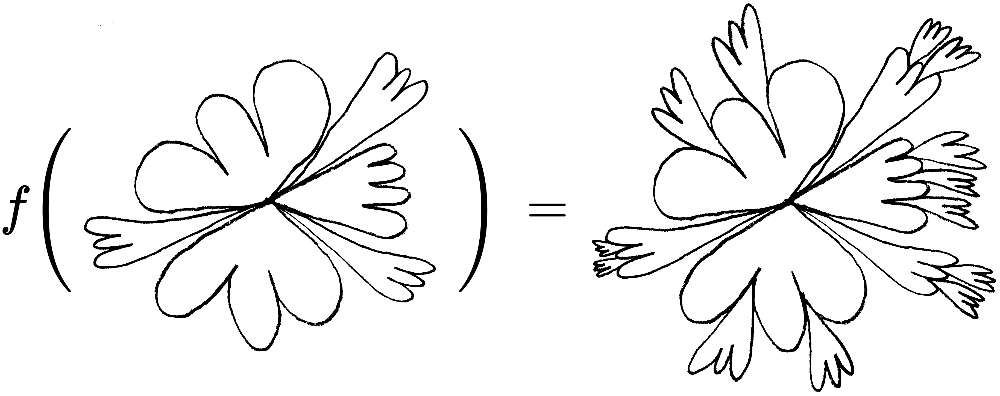

Dessins granulaires
Qu’est-ce qu’un dessin ?
Tout d’abord, un dessin pourrait se définir par un groupe de points (ou vecteurs).
let drawing = [
{x: 0, y: 10},
{x: 1, y: 10},
{x: 2, y: 10},
{x: 3, y: 11},
{x: 4, y: 11}
];En dessinant une petite ellipse à la position définie par chacun de ces points, on obtiendrait un tracé pointilliste. Est-ce suffisant ? J’ai l’impression qu’il me faudrait créer des lignes pour relier les points, et aussi que les dessins devraient plutôt être définis par des ensembles de transformations plutôt que par des ensembles de vecteurs.
Dans l’exemple ci-dessous, chaque élément d’un dessin est un objet dont la valeur a représente l’angle d’un pas de tortue géométrique, et l sa longueur (ou “length”).
let drawing = {
{a: 0, l: 0.1},
{a: 0.1, l: 0.12},
{a: 0.3, l: 0.13},
{a: 0.5, l: 0.16},
{a: 0.51, l: 0.12}
};Essentiellement, j’obtiens un ensemble de vecteurs polaires, où r représente la magnitude du rayon, et ∠θ son angle.
En définissant un dessin de cette manière, j’aurais beaucoup plus de flexibilité dans le système : une ligne serait « au courant » de l’angle et de la vitesse à laquelle elle est en train de se dessiner, et pourrait faire un genre de fondu enchaîné entre le présent grain qu’elle exprime et le prochain sur la liste.
Considérer l’épaisseur de la ligne… la durée nécessaire pour se rendre à cette épaisseur (donc, l’attaque !), la chute (decay), l’entretien (sustain) et l’extinction (release)… l’épaisseur d’une ligne peut être considérée comme son enveloppe… Et l’épaisseur (l’amplitude) doit aussi varier selon l’angle.
Et puisque j’anime, la ligne doit vaciller… Je peux la faire vaciller en variant les points à l’encre qui la constituent, mais elle pourrait aussi vaciller dans l’espace comme si elle était placée sur une acétate qui bouge légèrement entre les prises. Les segments pourraient avoir une résistance aux vacillements, résistance qui serait une fonction de leur angle ou de leur longueur, par exemple.
Mais qu’est-ce qu’un grain dans ce scénario ? Un seul coup de crayon, un morceau de dessin ? Un seul fragment d’un seul coup de crayon ? Je dirais que le grain est un morceau de dessin, c’est-à-dire un ensemble de coups de crayons. Cet ensemble de coups de crayons est similaire à un ensemble de notes jouées sur un instrument, et chaque fragment (ou atome ?) du grain dessiné est un ensemble de vecteurs polaires, tout comme chaque fragment d’un grain sonore est un échantillon. Il est très important de considérer que cette unité de mesure, le grain, est extrèmement variable et peut fluctuer constamment (ou pas du tout). La durée d’un grain serait donc un nombre de vecteurs.
Un dessin est aussi un réseau
Je veux aussi explorer l’idée d’un dessin considéré comme un réseau, c’est-à-dire qu’un dessin serait un ensemble de sommets et d’arêtes. Structurer un dessin ainsi permettrait davantage de jeux algorithmiques à l’intérieur d’un système. Les sommets ne seraient plus simplement tous alignés un à la suite de l’autre, ils pourraient avoir entre eux des liens de différentes natures. Chaque sommet pourrait avoir un nombre de connexions n avec d’autres sommets, et ces connexions pourraient permettrent des choses.
Par exemple, dans le dessin ci-dessous, si l’on considère que tout le dessin n’est constitué que de petits points, il est clair que le point central a une signification particulière. Chacune des six formes fermées est liée à lui ; elles semblent en avoir jailli.

Également, les points situés aux extrémités de chaque courbe d’une forme semblent posséder une signification particulière. Ils représentent, notamment, un changement brusque dans l’angle de la ligne dessinée, tandis que le reste des courbes est constitué de segments dont la valeur ∠θ est très rapprochée de la valeur ∠θ des segments voisins. Donc, ces points aux extrémités sont différents et pourraient être traités différemment. Par exemple, ils pourraient représenter des endroits où de nouvelles courbes pourraient naître. Avec beaucoup d’optimisme et de bonne foi, on pourrait imaginer la fonction suivante :
Passer des coordonnées cartésiennes aux coordonnées polaires
Le premier point d’un groupe de point ne peut pas avoir un angle ni une longueur (norme), mais comment est-il donc défini ? En fait, il me faut faire une distinction entre la suite cartésienne et la suite polaire. Les fonctions mousePressed() et mouseDragged() de p5.js me donnent tout d’abord une suite cartésienne (cn)n∈N.
let points = [
{x: 269, y: 436},
{x: 276, y: 434},
{x: 283, y: 432},
{x: 307, y: 427},
{x: 313, y: 425},
{x: 320, y: 423},
{x: 327, y: 420},
{x: 334, y: 417},
{x: 343, y: 413},
{x: 348, y: 408},
{x: 356, y: 403},
{x: 363, y: 397},
{x: 371, y: 391},
{x: 377, y: 383}
];Cette suite devra ensuite être transformée en suite polaire, mais cependant, je me dis que peut-être devrait-elle être sauvegardée sous cette forme cartésienne. Et ensuite, ce serait la création des grains qui opérerait cette transformation.
Contexte
Cette note de blog fait partie de mon projet de recherche Vers un cinéma algorithmique, démarré en avril 2018. Je vous invite à consulter la toute première note du projet pour en apprendre davantage.